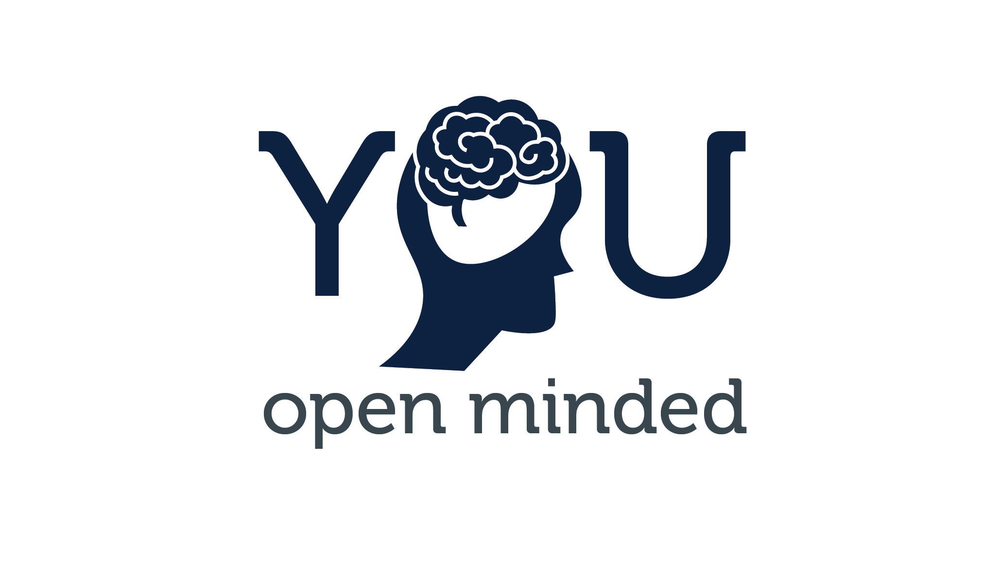
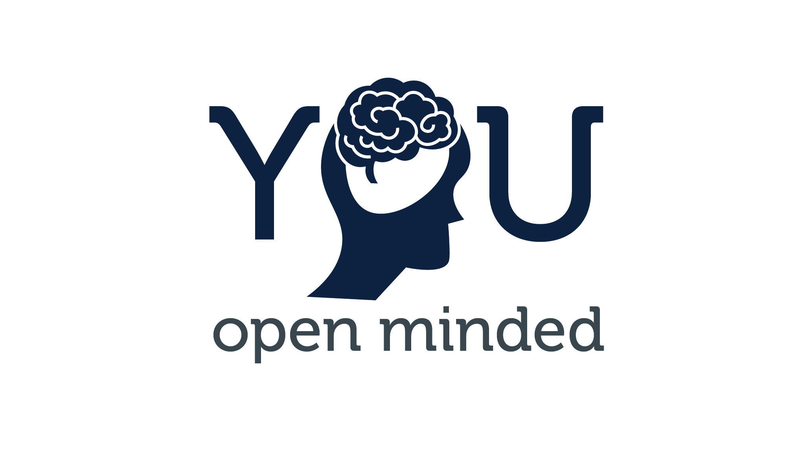

After they saw my work for Junior Atlantique, which I already made an article about, my school, IMT Atlantique, hired me to create some communication supports for them. The original contract was for four small one minute videos similar to what I had made for JA. Things deviated during the project.
I will skip the parts of the project I don't find interesting or that didn't really work out. I worked with them on a project they had to market a slogan : the YOU, representing the three years of education with three words : Yourself, Open-minded, Up-to-you. So I had to create a series of logos for this project. This is what we arrived at :
 

I just noticed I used the same font as for this website... I just love it I guess
Then the main task, a 10 minutes video ! In motion design, with tons of information to include. This was not part of the contract and if you know anything about motion design, you know it's a huge amount of work. I did what I could. I am not a professional of Digital Art. I worked probably around 70h on this video including script, audio, illustration and animation. The last third of the video was done during the last night of work and I decided to speed up. This was not in the contract, I was being too generous and perfectionist.
All-in-all, this project was a bit of a mess. The problems all arose from miscommunication. I assumed people working in communication and marketing would understand how illustration and animation worked and the work behind even one minute of animation. I'm still half-proud of what I did and I improved a lot in illustration and animation during this project. I also learned once again that being perfectionist is painful and can be detrimental when working with and for other people than myself.
Go back to the list of projects